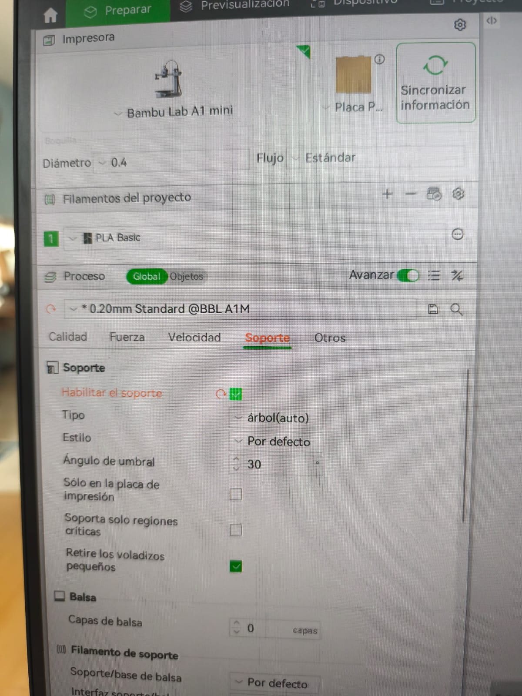
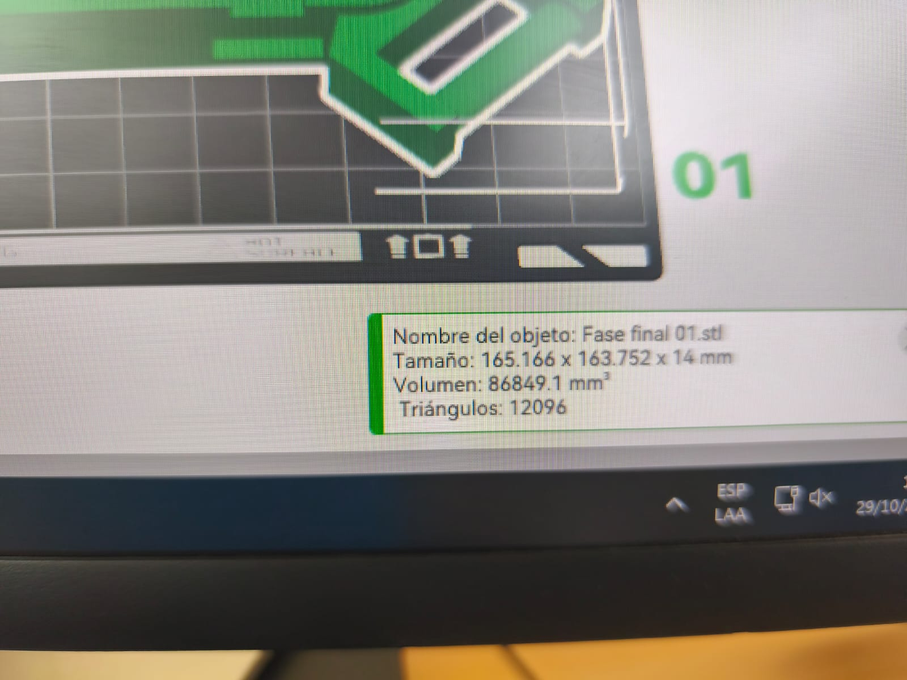
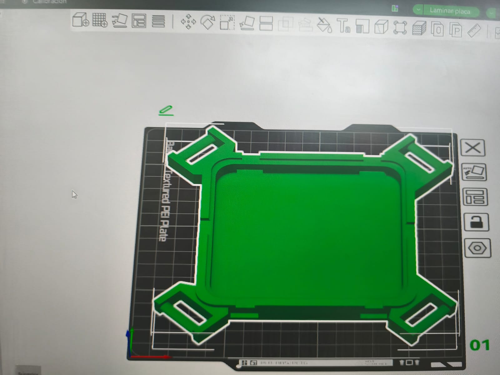
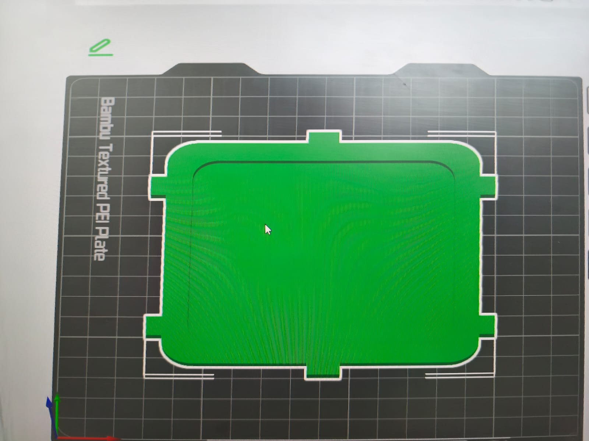
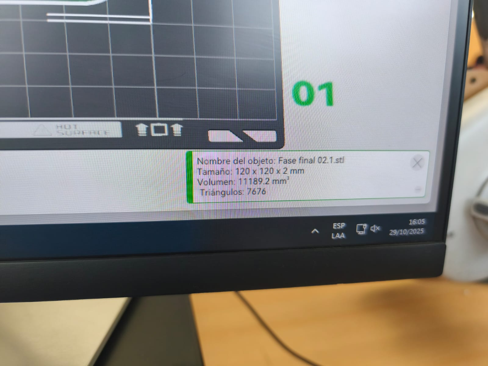
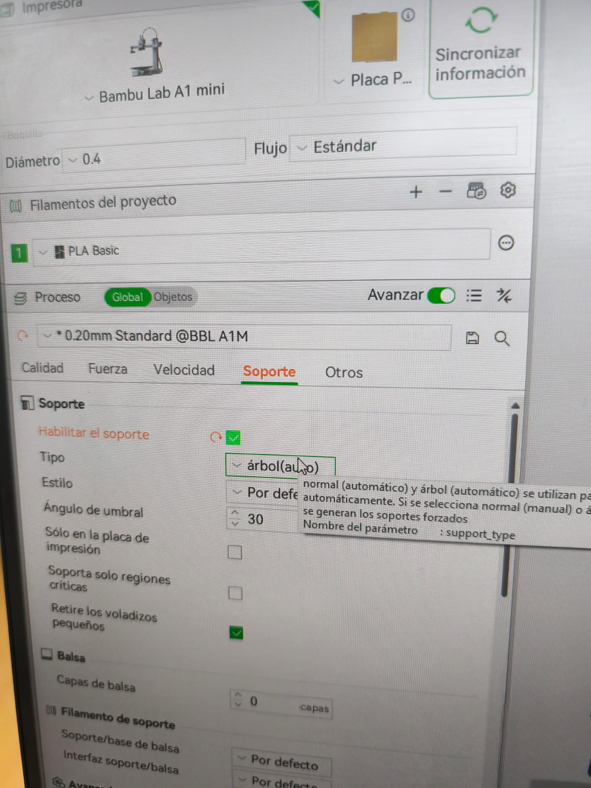
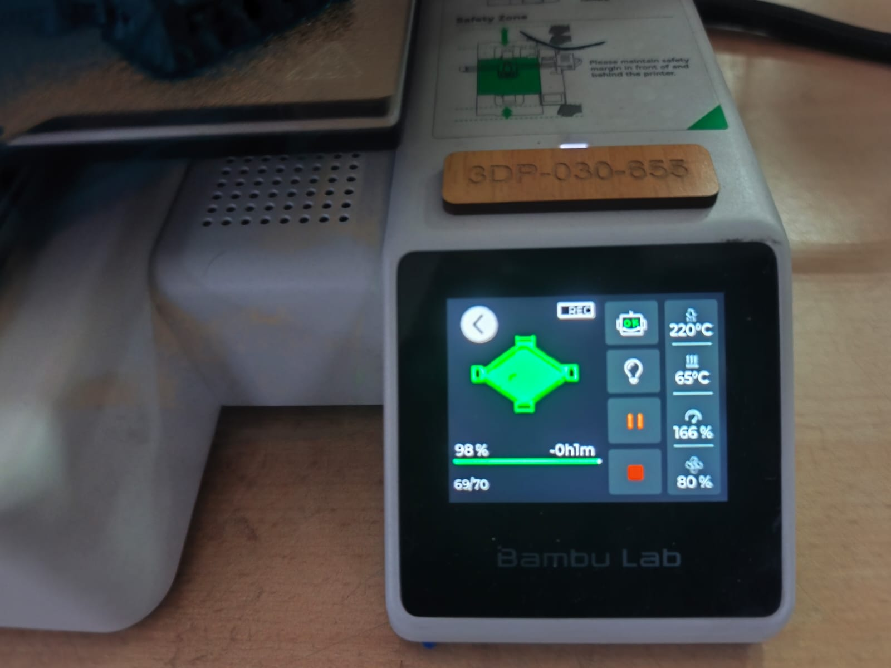

Proceso de Manufactura
En esta sección documentamos el proceso completo de fabricación del Espaldar Ultra, utilizando tecnologías de impresión 3D y corte láser para crear un producto ergonómico y personalizable.
Proceso de Fabricación
Observa el proceso completo de fabricación, desde el diseño digital hasta el producto final.
Video del proceso de fabricación del Espaldar Ultra
Etapas de Fabricación
Explora las diferentes etapas del proceso de fabricación a través de estas imágenes detalladas.







Piezas y Componentes
Listado completo de las piezas fabricadas con sus especificaciones técnicas y método de manufactura.
| Pieza | Material | Dimensiones | Método | Tiempo |
|---|---|---|---|---|
| Estructura principal | PLA | 200 x 150 x 50 mm | Impresión 3D | 4h 30min |
| Soporte lumbar | PLA flexible | 180 x 120 x 30 mm | Impresión 3D | 3h 15min |
| Base de ajuste | Acrílico 3mm | 150 x 100 mm | Corte Láser | 15min |
| Sistema de correas | PLA | 100 x 40 x 20 mm | Impresión 3D | 2h 00min |
| Conectores laterales | PLA | 80 x 40 x 25 mm (x2) | Impresión 3D | 1h 30min |
Línea de Tiempo del Proceso
Diseño CAD
Modelado digital
2 díasPreparación
Slicing y ajustes
4 horasFabricación
Impresión 3D
12 horasPost-proceso
Acabado y lijado
3 horasEnsamblaje
Montaje final
2 horas